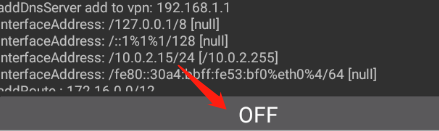
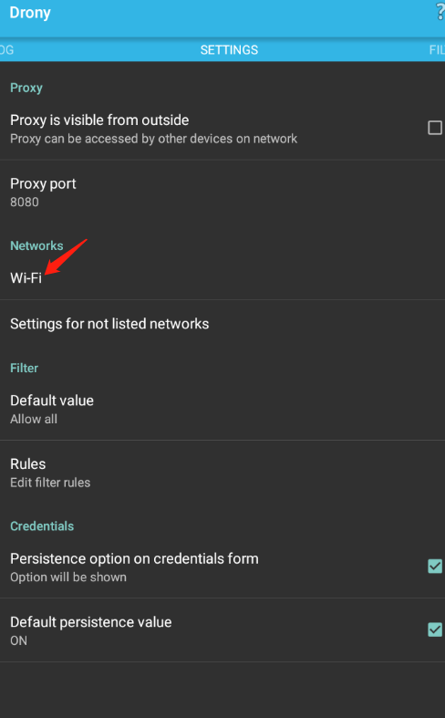
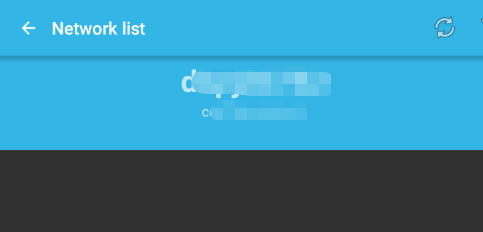
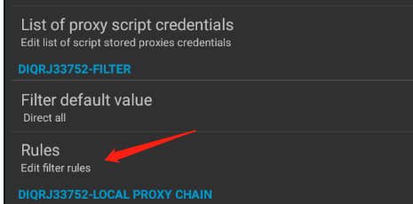
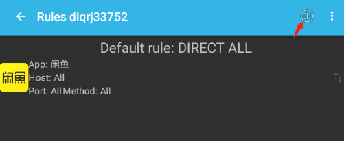
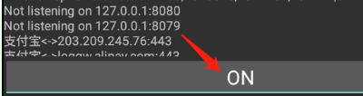

原因
默认Flutter不会主动使用系统代理，需要单独设置。
解决方案
使用抓包工具（Fiddler、burp等都可）抓包，模拟器安装drony抓包前设置指定代理。
环境常规配置：
1.抓包工具安装，证书安装；
2.安卓模拟器安装，并安装drony(下载链接: https://pan.baidu.com/s/1PwWU6ekXstRJHOIAdrIM9Q 提取码: yjpx )
3.drony配置(这里试验抓闲鱼的数据包):
进入drony,此时是off关闭状态，

向左划动，选择Wi-Fi

对wi-fi进行设置

选择代理模式为手动（Manual）

Proxy type代理方式选择 Plain http proxy ，Filter default value 选择 Direct all

选择Rule，设置应用规则
)
Network id处 选择当前wifi的SSID，Action 选择 Local proxy chain，
Application 选择需要强制代理的APP，Hostname 及 Port 不填，表示所有的都会被强制代理。

返回到主页面，点击off，变为启动状态

4.抓包工具配置：
设置代理ip及端口

后续进行抓包常规操作即可